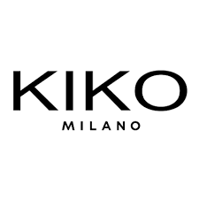

Article 2
KIKO
KIKO est une entreprise italienne de cosmétiques. Elle est fondée à Bergame en 1997 par le groupe d'Antonio Percassi. Elle rencontre le succès à partir du milieu des années 2000 jusqu'à devenir un modèle pour l'ensemble de ses concurrents.

Menu